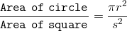
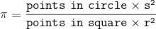
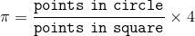

How the math works:
The ratio of the area of the circle to the area of the square should be proportional to the ratio of points in the circle to the points in the square
Substitute the number of points in each region for the area of each region and solve the above equation for π
But since 2r = s, this simplifies to
